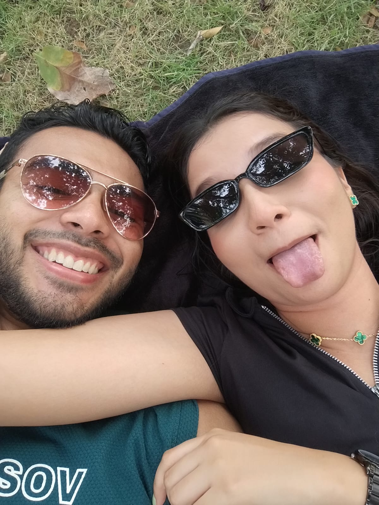

¿Cómo has estado? Ha sido poco tiempo desde la última vez que hablamos, en aquella ocasión era tu día especial, aquel día solo deseaba que la estuvieras pasando muy bien y a juzgar por las fotos con tus amigas, familiares, de los regalos... fue un muy buen día para ti, me alegro mucho, he hablado un poco con tu mamá, sé que aún no consigues dar con un trabajo y que están aún un poco apretadas, pero confío en que muy pronto y ya lo verás, tendrás ese trabajo por el que has estado rezando y estudiando tanto.
Sé que es difícil, frustrante, desesperante, porque el tiempo no espera por nadie y porque hay muchas cosas que has querido hacer y no has podido por el dinero y te entiendo, tú sabes que también estoy pasando por eso. Rubén recién compró su casa en U.S.A, increíble, me alegro mucho por él y a la vez me da envidia de la buena.
Pero no pierdas la esperanza, sigue trabajando en ti, piensa inteligentemente, no te enfoques en lo que los demás están consiguiendo, concéntrate en ti, en tu progreso, en las cosas que te gustan...
Y si deseas saber... en cuanto a mí, me ha ido bastante bien, de verdad, no todo es perfecto obviamente, pero he tenido oportunidades muy buenas, he conocido gente muy chévere, otras no tanto, gente de la que puedo aprender bastante y eso hago y que incluso puede que me echen una mano en el futuro. ¿Recuerdas el programa de tutores? Bueno, de los 9 que nos inscribimos, ¡quedé en los 3 finalistas! Al parecer los 3 tenemos muy buenas habilidades técnicas y las psicólogas determinaron con unas entrevistas que los 3 teníamos muy buenas habilidades socio-emocionales, por lo que empatamos los 3, lastimosamente el desempate fue la nota de inglés mientras que mi compañero y yo teníamos un nivel B2, la tercera contaba con un nivel C1, y se le notaba… perdí, pero le demostré a todos y a mí mismo mis capacidades, a pesar de ser un neófito en este nuevo mundo, además recordé lo importante de tener un muy buen nivel de inglés en este campo, pero bueno, quedé de Sub-tutor. Lo único que me arde es que me ganó una niña de 17 años jaja y siéndote franco, yo manejaría mejor el clan jeje. No me quedo solo en eso, también recibí una oferta de empleo para trabajar en servicio técnico por parte de una empresa aliada de Riwi, era en inglés todo, para bien o para mal, no quedé, necesitaban 4 personas y a mí me llamaron de último para hacer los 8 exámenes (un montón) y éramos como 10 haciendo la prueba, ni modo, el que pega primero gana…. así que bueno a seguir practicando, me motiva saber que mi TL de inglés me tiene en cuenta para esas cosas.
También quiero contarte que tengo claro quiénes son las personas con potencial, ya creé un grupo para futuros proyectos que Riwi solicitará para no estar corriendo con gente irresponsable, que ya me pasó y hasta discutí con un compañero (al parecer es autista). En inglés me ha tocado llevar de la mano a mi grupo, ahí ni modo no podía escoger con quiénes quería, trabajamos los grupos por mesa, pero esa dificultad extra porque es cule grupo peye, pero se dejan guiar, me obliga a aprender más, a tener más claras las cosas técnicas y a ser mejor líder, y en cuanto a desarrollo web, bueno ya has visto las cosas que he logrado hacer y sigo aprendiendo...
Aún no sé a qué me quiera enfocar, me llama la atención la ciber-seguridad, hackeo ético, protección de servidores, pero aún hay módulos por delante así que puedo cambiar de opinión, eso sí, hay muy buenas ofertas laborales y mi TL se especializa en eso, tiene mucha plata el bastardo y mucha experiencia, pero es re sencillo y muy chill. Estoy bastante enfocado ¿me entiendes?
Comencé a hacer ejercicio de nuevo, calistenia en el parque en lo que ahorro un poco para el gym y la suplementación, sigo "trabajando", y dedico bastante tiempo a seguir estudiando por mi cuenta, también sigo jugando softball, sabes que me gusta mucho y a mi mamá le ha ido bastante bien con su colegio, de a poco está mejorando su entorno, me alegro mucho por ella, Zoe está bien, ya falta nada para que se gradue, mi papá sigue igual y Alaska está super bien.
Bueno, te vendrá a la mente ¿por qué me escribe tanto? Estoy en un parque escribiendo esto en una libreta, está calmado y he descubierto que escribir me ayuda a relajarme y expresarme, es algo espiritual, no sé, conecto conmigo. De un tiempo para acá he estado pensando realmente mucho, he hecho introspección y mirado atrás, específicamente a cuando rompimos y un poco más atrás, entendiendo el porqué de todo. Estando más calmado y con espacio, algunas cosas cobran más sentido. Quiero contarte un poco de eso porque para serte sincero son cosas que no salen de mi cabeza y necesito que escuches, comenzando porque ha sido duro no dejar de pensarte y extrañarte, es inevitable, aunque hay breves momentos de distracción estás 90% del tiempo en mis pensamientos, con cada logro que he tenido, lo primero que hacía era abrir el chat para escribirte y contarte para finalmente darme cuenta que nuestra última conversación así terminó hace ya casi 2 meses.
Me pega fuerte aún, reconozco que no ha sido posible para mí dejarte de lado porque incluso aún me preocupo por tu bienestar. También he de confesarte que me hace bastante daño cosas tan pequeñas de las que estoy tan al pendiente como el ver que no reaccionas a alguna publicación, simplemente la ignoras, o como hace poco, reaccionabas con corazones rojos en vez de blancos por WhatsApp el día de tu cumple, una bobada pensarás tú... y bueno no lo es para mí, para mí significa aún mucho, y a la vez es como si a ti no te importara eso, y bueno, me empiezas a superar y olvidar, eso es difícil de asimilar, porque parece que fuera algo que inició más allá de estos 2 meses, también como se siente de frío el cambio de cómo me hablabas antes y cómo me respondes ahora y haciendo memoria, el visto que me dejaste del mensaje que te dejé cuando pasó 1 mes, todo esto ha dolido bastante....
Quiero contarte algo, además, algo que me guardé porque en su momento no soporté verte tan triste, tanto asi que decidí mentirte. Te mentí cuando hablamos de nuestra separación, esto nunca fue por los dos, creo que en el fondo lo sabes. Yo pude haber seguido hasta encontrar una solución a todo, porque para mí no había un lado negativo, porque el separarnos no iba a cambiar nada, eso no iba a mejorar las cosas, tampoco me lo iba a hacer más fácil, sigo lidiando con muchas cosas aún y han sido las mismas de siempre. Así que sí, aunque es duro decírtelo, esto fue por ti y no puedo seguir mintiéndome a mí mismo, a ti, ni seguir maquillando la historia cada que me preguntan por qué terminamos si nos queríamos tanto, nunca quise responder con la verdad, pero la verdad es que fue tu insatisfacción lo que lideró en tu respuesta. En cuanto empezaste a escuchar los comentarios de tus familiares quejándose de los esposos/novios de tus primas que no hacen nada o aportan poco, te asustaste porque yo parecía uno de ellos y eso esta bien, somos humanos y sentimos temor por nuestro futuro. Sé que la incertidumbre de alguien que está en 0 te hizo dar un paso atrás y replantearte con quién estabas en ese momento y bueno, estás en tu derecho de elegir con quién quieres pasar tu vida, no te voy a juzgar, naturalmente, es lo más inteligente... pero no lo hace menos doloroso. Soy consciente de que no te satisfice en aspectos importantes como el sexo o el dinero y con dinero me refiero a todo lo que se puede hacer con él, estabilidad económica, regalos, salidas, ayudarte en tu hogar, etc.
Todo esto te lo digo NO desde el odio o el rencor, porque no siento nada de eso hacia ti, al contrario, te amo tanto flaca, tu no tienes ni idea de cuanto, esto lo hago desde el amor propio, mi salud mental, emocional y el profundo cariño que te tengo. Te amo mucho aún, más de lo que debería, me cuesta incluso borrar sumone o sacar las fotos de mi galería, y algo me dice que eso ya lo hiciste y eso duele aún más...
Por todo esto, necesito desintoxicarme de ti, porque te echo mucho de menos, porque estoy muy pendiente a ti, a tus redes, a cómo estás, pensándote, en qué hiciste... y esas cosas ya no me corresponden. Por todo esto decidí, no bloquearte, pero sí necesito una desconexión total de todo lo que tenga que ver contigo, olvidarte porque recordarte me impide avanzar, me obligaré a simplemente alejarte de mi ambiente. Mi número seguirá siendo el mismo por si alguna vez estás en una emergencia, aunque sé que no lo vas a necesitar.
Se me arruga el corazón y a la vez es muy liberador dejar esto salir, era algo que me tenía atado… No creo tener nada más que decir al respecto, quizá se me escape algo pero lo principal ya te lo dije. Solo quiero agradecerte el tiempo que compartimos juntos, a tu mamá porque fue estupenda conmigo, quedé en deuda con ustedes por todo lo que me ofrecieron. No tienes ninguna deuda conmigo, las cosas que hice las hice desde el corazón, además con todo lo que Moni me dio eso está saldado, hasta le quedo debiendo. Dudo mucho que nos volvamos a cruzar, pero si llega a pasar, ojalá sea en un contexto distinto de nuestras vidas y así nos podamos contar todo cuando nos veamos de nuevo.
Te deseo lo mejor para ti y tu mamá, espero que halles un amor tan bonito como el que te entregué y que esta vez cumpla con todas tus expectativas, un muy buen trabajo que te permita conseguir las cosas que deseas y una vida feliz, espero que me recuerdes como el hombre que te amó como ningun otro, yo asi te recordare, eres lo mas bonito que me ha pasado en la vida.
Con mucho amor, tu flaco. ✦
Habith
